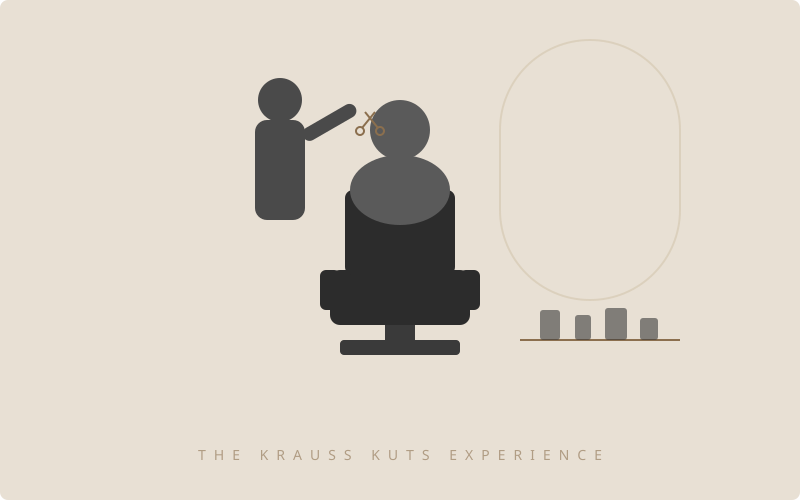

Brand Overview
Krauss Kuts is a modern self-care studio for people who take grooming seriously without taking themselves too seriously. We're confident, warm, and detail-obsessed.
Mission
To make self-care a daily ritual, not a special occasion. Every visit should feel like a reset — sharp, intentional, and worth your time.
Audience
Style-conscious adults (25–45) who value quality over convenience. They care about what goes on their body and how they show up in the world.
Logo
The logo combines a KK monogram with a scissors motif — a nod to the craft. Use the full logo where space allows, the icon mark for tight spaces and favicons.
Primary — Light background
Inverted — Dark background
Icon mark — Favicon, social
- Minimum clear space around logo: equal to the height of one "K" in the monogram
- Minimum size: 32px (icon mark), 120px (full logo)
- Don't stretch, rotate, add drop shadows, or change the logo colors
- Don't place the logo on busy or low-contrast backgrounds
Color Palette
Warm, grounded, and premium. The palette pairs rich neutrals with a signature gold accent.
Typography
Two fonts: a serif for impact and a sans-serif for clarity. Never mix more than these two.
Tone of Voice
Confident, not cocky. Warm, not cheesy. We talk to people like a sharp friend who happens to be really good with scissors.
Do
"Walk in wound up, walk out unwound."
"The same oil we use in the chair — now for your shelf."
"Keeps your beard looking intentional, not accidental."
Don't
"We are committed to delivering best-in-class grooming solutions."
"Pamper yourself today!"
"Limited time offer!!!"
Brand Adjectives
Sharp • Intentional • Warm • Grounded • Modern-classic • Detail-obsessed
Not These
Luxury • Exclusive • Premium (overused) • Pamper • Treat yourself • Bespoke
Product Line
Product illustrations follow the brand palette. Replace SVGs with photography when product shots are available — keep the warm, minimal aesthetic.

Matte Clay Pomade
PROD-POMADE-001

Cedarwood Beard Oil
PROD-BEARDOIL-001

Daily Reset Shampoo
PROD-SHAMPOO-001

Cooling Aftershave Balm
PROD-AFTERSHAVE-001

Scalp Revival Serum
PROD-SCALP-001

The Shop Candle
PROD-CANDLE-001
Imagery Guidelines
Photography should feel candid and warm — real moments in the chair, not stock-photo perfection.

Photography Do's
Natural light or warm tungsten tones. Close-up details (hands cutting, product texture, lather). Candid expressions. Warm color grading that matches the brand palette.
Photography Don'ts
Flash photography. Overly posed or stock-looking shots. Cool/blue color grading. Busy or cluttered backgrounds. Heavy filters or overlays.
Digital Usage
Rules for using the brand across web, social, and third-party embeds.
- Favicon: Use the icon mark (logo-icon.svg) at 32x32px
- Social profile: Icon mark on Cream (#FAF7F2) background
- Email header: Full logo, max 200px wide, on white or cream
- Klaviyo popups: Match Cream background, Brass accent, Inter font
- Boulevard widget: Use custom CSS to align with brand palette where possible
- Buttons: Noir fill (#1A1A1A) with white text. Hover state: Brass (#8B6F4E)